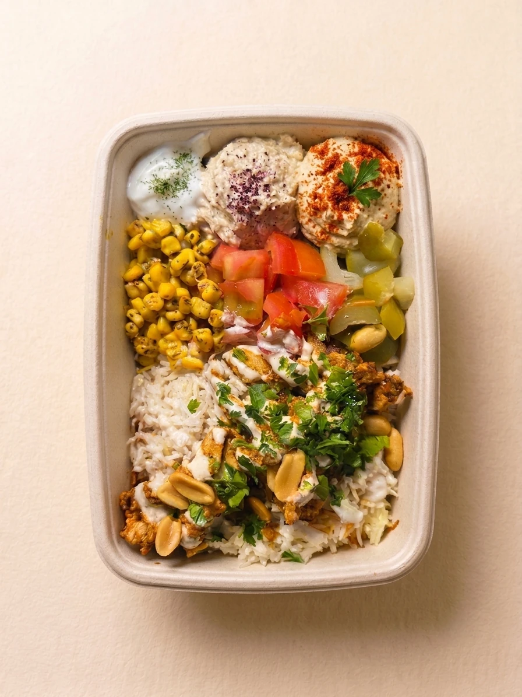
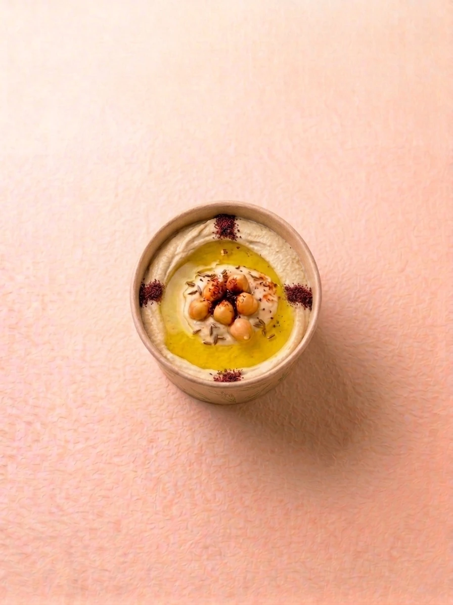
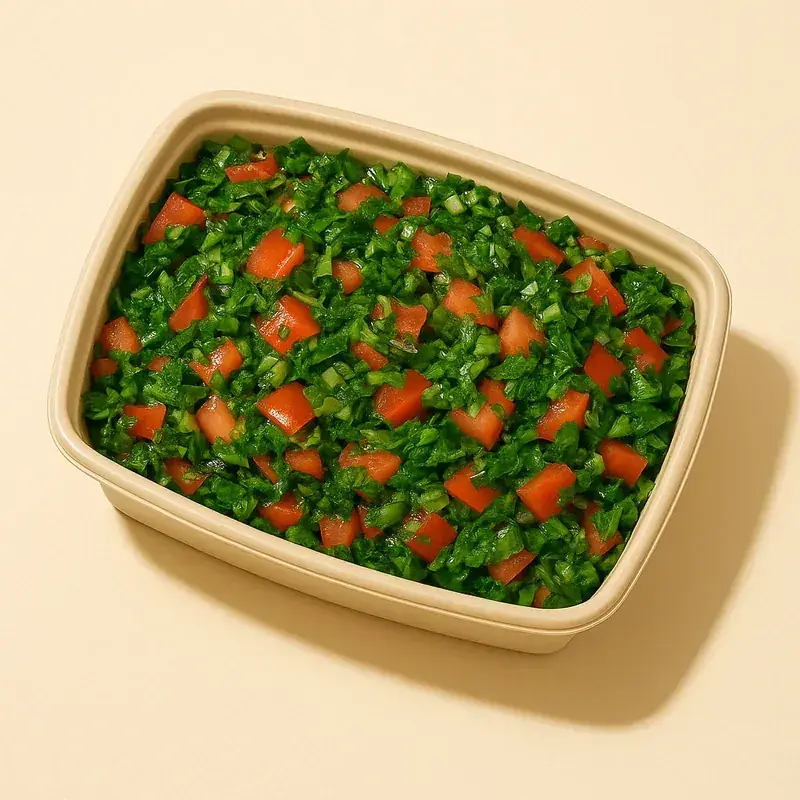
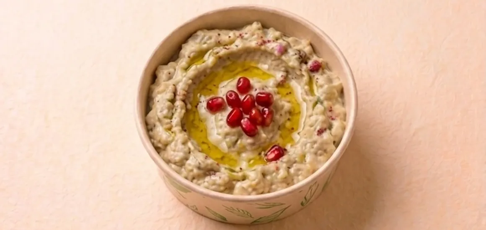
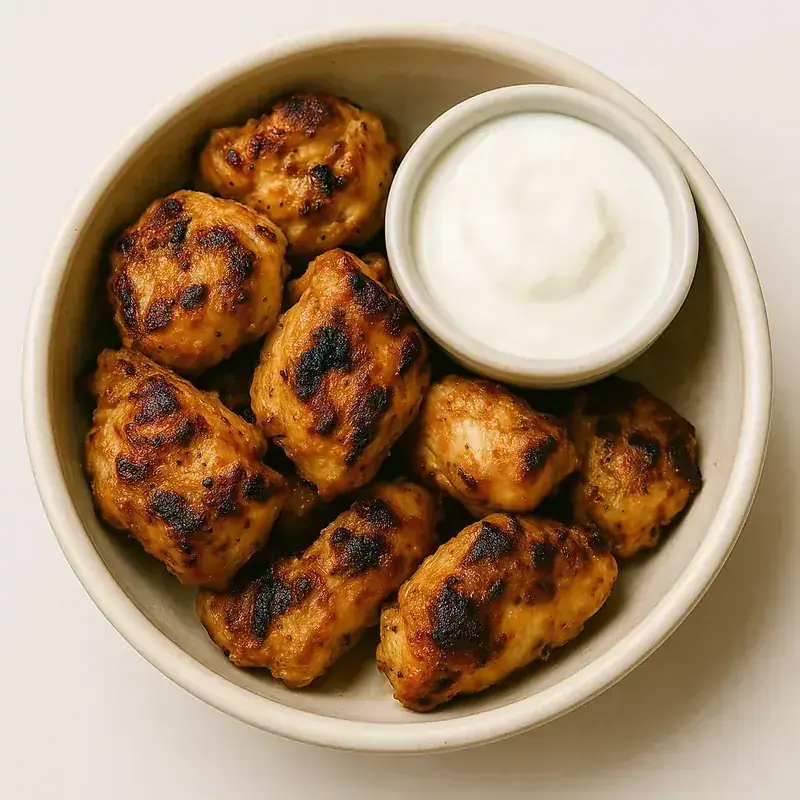
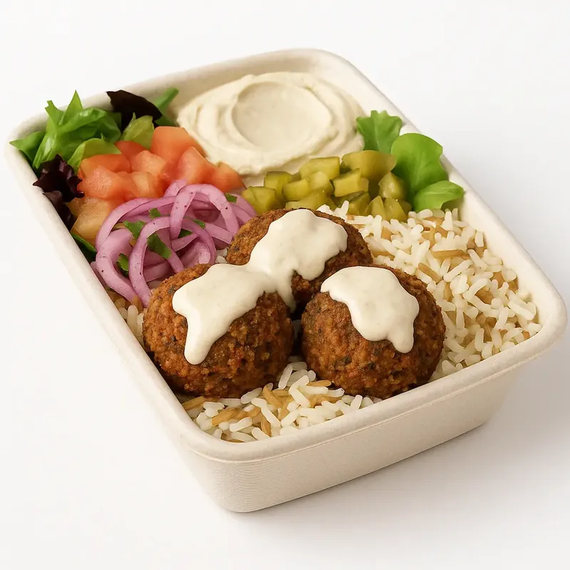
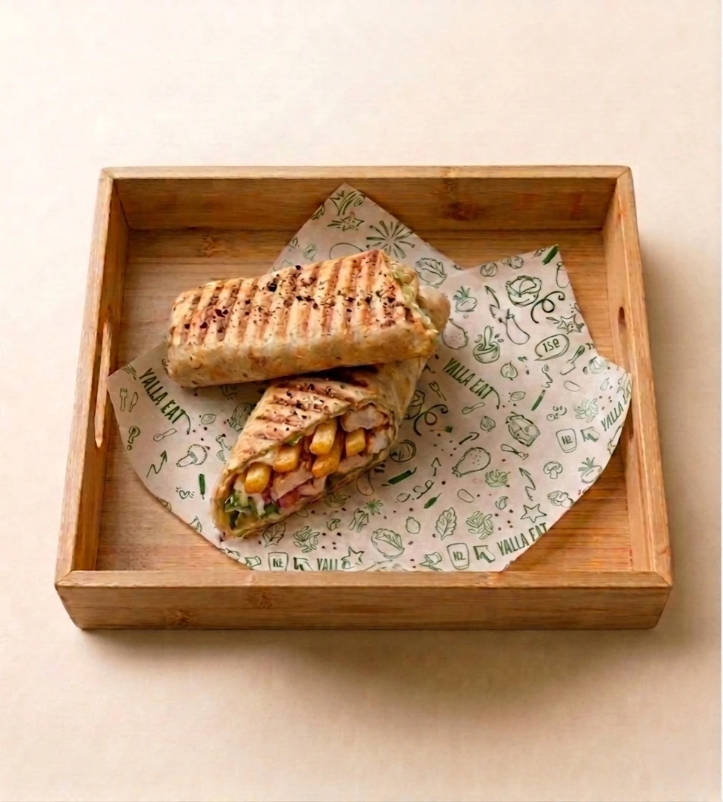
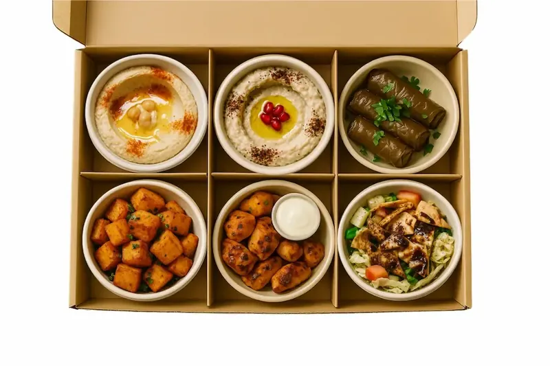
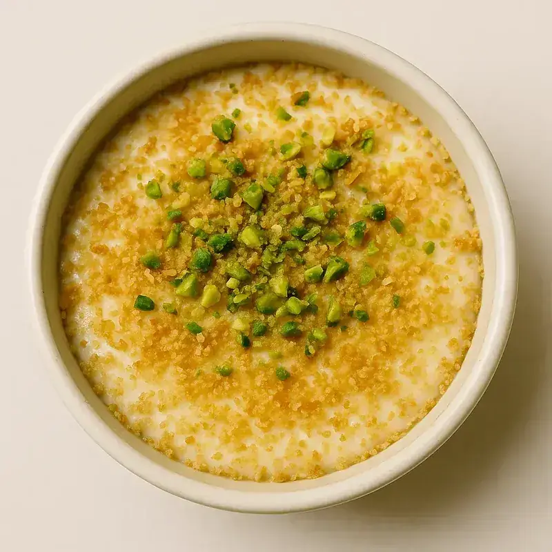
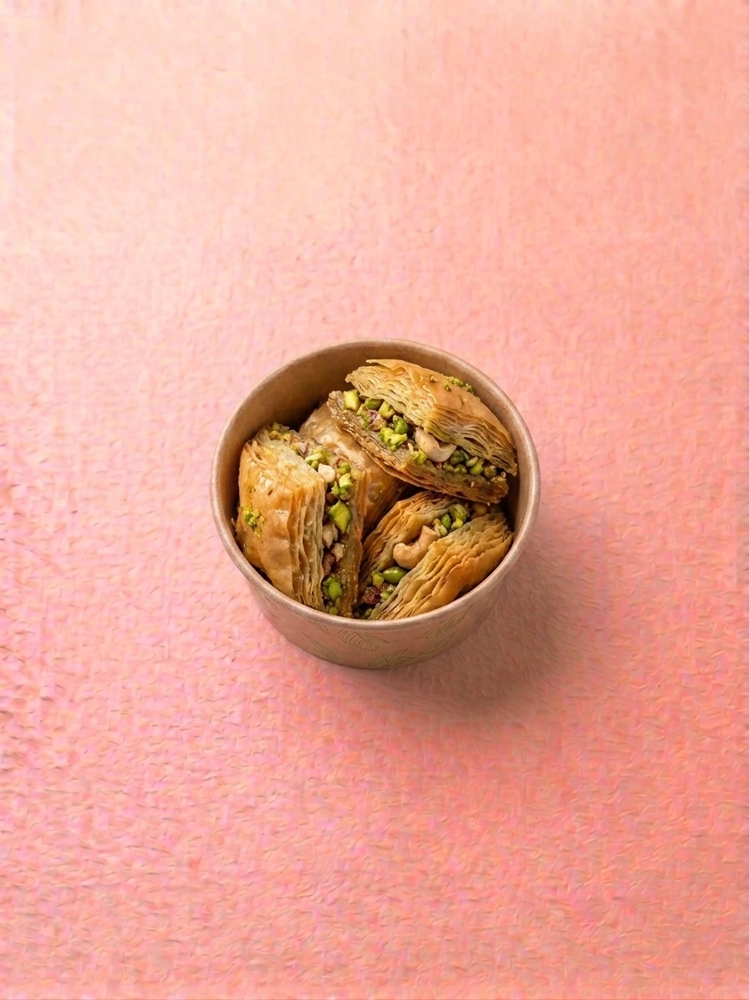

« Yalla ! » veut dire « allez, on y va ! » en libanais. C'est exactement l'esprit d'un fast food libanais : on commande, on mange, on repart. Chez YallaEat, au 29 Rue de Bourgogne à Vaise, on garde la vitesse et on change tout le reste. Shawarma, taouk, falafels, houmous et taboulé sont faits maison chaque jour, avec une cuisine libanaise qui est saine par nature. On appelle ça le fast good libanais.

Fast food ou fast good : quelle différence ?
Le fast good garde ce qu'on aime dans le fast food : c'est rapide, simple, et on mange avec les mains si on veut. Il change ce qu'il y a dans l'assiette.
| Critère | Fast food classique | Fast good libanais (YallaEat) |
|---|---|---|
| Préparation | Produits souvent livrés prêts à réchauffer | Fait maison chaque jour, sur place |
| Sauces | Sauces industrielles en bouteille | Sauces maison : toum (crème d'ail), crème de sésame citronnée |
| Légumes | Une feuille de salade et une rondelle de tomate | Taboulé, concombres marinés, tomates, oignons persillés, salade |
| Choix | Menu fixe | Bowl, salade ou sandwich à composer |
| Régimes | Peu d'options | Végé, vegan, sans gluten, halal |
| Rapidité | Au comptoir | Au comptoir, ou prêt en 15 min en click & collect |
Pourquoi la cuisine libanaise est saine par nature
On n'a pas eu besoin d'inventer une cuisine « healthy ». Au Liban, on mange comme ça depuis toujours. Les bases de la cuisine libanaise sont des produits simples et frais.
- Les pois chiches. Ils font le houmous et les falafels. Ce sont des légumineuses : des protéines végétales et des fibres.
- Le persil, la menthe et le citron. Le taboulé libanais est d'abord une salade d'herbes, pas une salade de semoule. La fattouch mélange légumes croquants et pain grillé.
- L'aubergine. Grillée et mixée avec la crème de sésame, elle donne le moutabal.
- Les viandes marinées. Le taouk, ce sont des brochettes de poulet mariné. Le shawarma, ce sont des émincés de poulet ou de bœuf marinés aux épices libanaises.
- Le pain libanais. Une galette fine, qui sert à envelopper ou à tremper.




Sain ne veut pas dire « tout léger »
On préfère être honnêtes. Nos falafels sont frits, comme dans la recette traditionnelle, et la baklawa reste un dessert. C'est l'ensemble qui fait une cuisine saine : beaucoup de légumes, des légumineuses, des herbes fraîches, des sauces maison. Un bowl réunit tout ça dans la même boîte.
Le fast good libanais chez YallaEat : qu'est-ce qu'on mange ?
Les bowls, le cœur de la carte
Une base fraîche et une base féculente, une protéine, des garnitures, un topping et une sauce maison. Le Falafel Bowl et le bowl à composer commencent à 9,90 €. Le Taouk Bowl et le Shawarma Poulet Bowl sont à 11,30 €, le Shawarma Bœuf Bowl à 12,30 €. En grand format, le Taouk Bowl contient deux brochettes de taouk. Voir les bowls.

Les sandwichs dans le pain libanais
Falafel à 7,90 €, taouk ou shawarma poulet à 8,90 €, shawarma bœuf à 9,90 €. C'est le format le plus « fast » : il se mange à une main. Voir les sandwichs.
La MezzéBox, pour goûter à tout
Le mezzé, c'est la façon libanaise de manger : plein de petites assiettes au milieu de la table. La MezzéBox met houmous, taboulé, falafels et pain libanais dans une seule boîte, dès 20,90 €. Voir la MezzéBox.


Les desserts libanais
Yaourt à la rose, halawa à la pistache, mouhalabiyé à la fleur d'oranger et baklawa, dès 3,90 €. Pour boire, la limonade maison.


Tout bowl, sandwich ou salade passe en formule pour 3,40 € de plus, avec un side et une boisson. Voir la carte complète.
Manger sain en fast good : nos repères
- Prenez un bowl plutôt qu'un sandwich quand vous voulez plus de légumes : la boîte laisse la place aux garnitures.
- Choisissez une protéine grillée ou végétale : le taouk en brochettes, ou les pois chiches avec le houmous et les falafels.
- Misez sur les herbes : taboulé, oignons persillés et concombres marinés donnent du goût sans alourdir.
- Gardez une sauce maison : le toum ou la crème de sésame citronnée suffisent, pas besoin d'en mettre trois.
Fast : 15 minutes en click & collect
Le fast good n'a d'intérêt que s'il reste rapide. Commandez à l'avance et votre repas est prêt en 15 minutes.
- Allez sur yallaeat.dishop.co.
- Composez votre bowl, votre sandwich ou votre MezzéBox.
- Choisissez votre heure de retrait et payez en ligne.
- Passez chercher votre repas au 29 Rue de Bourgogne, Lyon 9.
Horaires
Du lundi au vendredi de 11h30 à 14h30, et tous les soirs de 18h30 à 22h00. Sur place, à emporter, en click & collect ou en livraison via Uber Eats et Deliveroo.
Le petit lexique du fast food libanais
Pour commander comme à Beyrouth :
FAQ — fast food libanais à Lyon
C'est quoi le fast good ?
Le fast good garde la rapidité du fast food mais change tout le reste : des plats faits maison chaque jour, des ingrédients frais et des sauces maison. Chez YallaEat, c'est la cuisine libanaise servie vite.
Un fast food libanais peut-il être sain ?
Oui, parce que la cuisine libanaise l'est par nature : pois chiches, persil, citron, aubergine, légumes frais et viandes marinées. Tout n'est pas léger pour autant : les falafels sont frits et la baklawa reste un dessert. Un bowl équilibre le tout.
Où manger un fast food libanais à Lyon 9 ?
Chez YallaEat, 29 Rue de Bourgogne à Vaise. Voir aussi notre page restaurant libanais Lyon 9.
Y a-t-il des options végé, vegan, sans gluten et halal ?
Oui. Falafels, houmous, moutabal et taboulé couvrent les envies végétariennes et vegan, des options sans gluten sont disponibles, et toutes les viandes sont halal.
Yalla, on passe à table ?
Commandez en ligne et récupérez votre repas en 15 minutes au 29 Rue de Bourgogne. Sahtein !